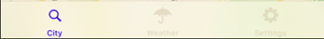
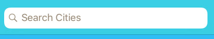
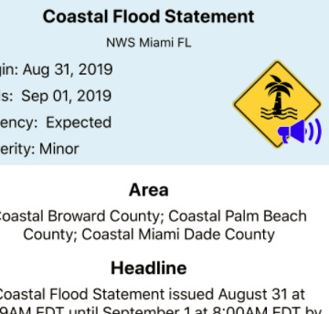
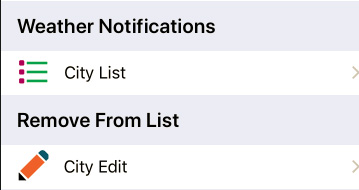
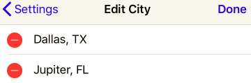

Permissions
In a few cases, permissions are requested to enable the full capabilities of the app. A request is made in order to automatically obtain the weather forecast for the current location. If request is denied, then the current city location has to be manually entered in the search bar.
User Interface Interactions.
User Interface Interactions provides a summary of the features and flow of the user Interface. It shows how to search for the weather forecast for a particular city and shows how to make app settings changes.
Search Cities
Start to process of obtaining the weather forecast for a new city by selecting the search icon on the tab bar.
Weather forecast, for a city in the continental United States is obtained by entering a city name in the search bar.
Map Callout Forecast
Selecting a city from the table of search results, generates a one day forecast which is overlayed on a map of the city.
Tapping on the blue Forecast button loads a more comprehensive weather forecast view.
Weather Forecast
Daily Forecast
Alert Detail
App Settings
Setting Options
Remove City from List
Weather Notification Settings
Alert Scheduling
Begin setting the alert update schedule by selecting the device's settings app.
Weather alert updates can be scheduled using the iOS settings app. By default alert updates are scheduled for Automatic updates. Notifications can be scheduled for:
- Auto
- 30 minutes
- 1 hour
- 2 hours
- 4 hours
- 8 hours
- 12 hours